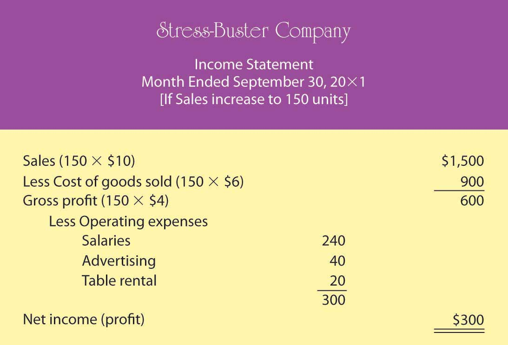
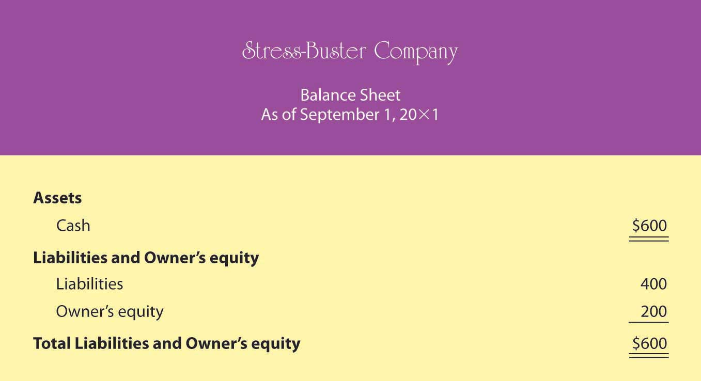
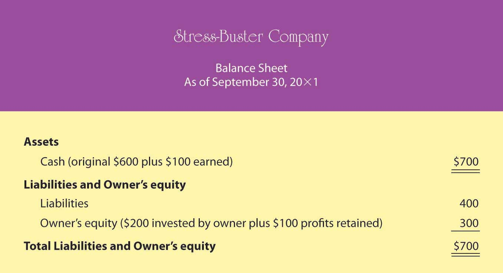
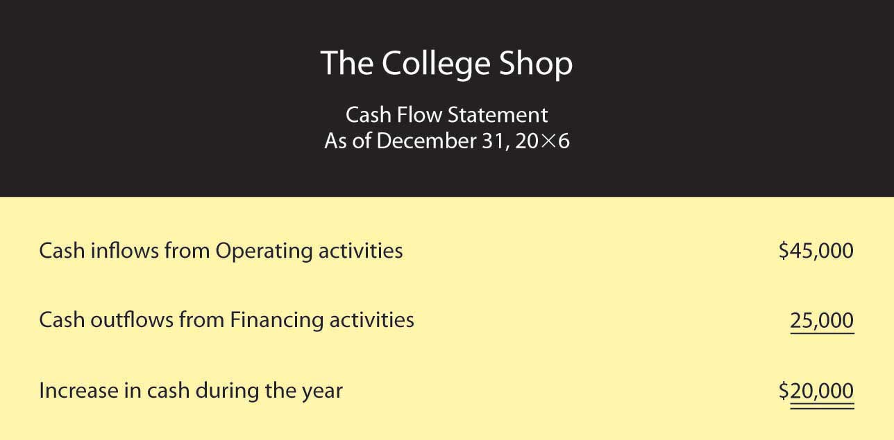

Accounting is often called “the language of business” because it provides much of the information that owners, managers, and investors need to evaluate a company’s financial performance. According to the world’s most successful investor (and second-richest person), Warren Buffet, the best way to prepare to be an investor is to learn all the accounting you can.John Price, “The Return of the Buffetteers,” Investor Journal, August 1998, http://www.sherlockinvesting.com/articles/buffetteers.htm (accessed May 29, 2006). Buffet, chairman and CEO of Berkshire Hathaway (a company that invests in other companies), turned an original investment of $10,000 into a net worth of $35 billion in four decades, and he did it, in large part, by relying on financial reports prepared by accountants.Interview with Warren Buffet. “Warren Buffet: What Does He Have That You Don’t?” Cool Avenues, http://www.coolavenues.com/know/fin (accessed May 26, 2006).
Figure 12.1 Warren Buffet
Photo by Kevin Parry/WireImage/Getty Images
In this chapter, we’ll take Buffet’s advice. We’ll start by explaining what accounting is and by identifying the various uses of accounting information. Then, we’ll learn how to prepare a set of financial statements, how to interpret them, and how to analyze a company’s performance using a technique called ratio analysis. Finally, we’ll discuss career opportunities and the future of the accounting profession.
The purpose of accounting is to help stakeholdersParties who are interested in the activities of a business because they’re affected by them.—parties who are interested in the activities of the business because they’re affected by them—make better business decisions by providing them with financial information. AccountingSystem for measuring and summarizing business activities, interpreting financial information, and communicating the results to management and other decision makers. consists of measuring and summarizing business activities, interpreting financial information, and communicating the results to management and other decision makers. It’s impossible to run an organization or to make sound investment decisions without accurate, timely financial information; it’s the accountant who prepares this information. More important, accountants communicate the meaning of financial information and work with individuals and organizations to help them use financial information to deal with business problems. Getting numbers is the easy part of accounting, particularly since the introduction of the computer. The hard part is analyzing, interpreting, and communicating information—and doing so clearly while effectively interacting with people from all business disciplines.
Accounting can be divided into two major fields. Management accountingBranch of accounting that provides information and analysis to decision makers inside the organization to help them operate the business. provides information and analysis to decision makers inside the organization to help them operate the business. Financial accountingBranch of accounting that furnishes information to individuals and groups both inside and outside the organization to help them assess the firm’s financial performance. furnishes information to individuals and groups both inside and outside the organization to help them assess the firm’s financial performance. In other words, management accounting helps you keep the business running while financial accounting tells you how you’re doing in the race.
Let’s look a little more closely at each of these two fields.
Management accounting plays a major role in helping managers carry out their responsibilities. Because the information that it provides is intended for company-wide use, the format for reporting it is flexible. Reports are tailored to the needs of individual managers, and their function is to supply relevant, accurate, timely information in a format that will aid managers in making decisions. In preparing, analyzing, and communicating such information, accountants work with individuals from all functional areas of an organization.
Accountants prepare the financial statementsFinancial reports—including the income statement, the balance sheet, and the statement of cash flows—that summarize a company’s past performance and evaluate its financial health.—including the income statement, the balance sheet, and the statement of cash flows—that summarize a company’s past performance and evaluate its financial condition. In preparing financial statements, they adhere to a uniform set of rules called generally accepted accounting principles (GAAP)Uniform set of rules for financial reporting established by an independent agency called the Financial Accounting Standards Board (FASB).: principles for financial reporting that are established by an independent agency called the Financial Accounting Standards Board (FASB). Knowing that financial statements have been prepared according to GAAP assures users that reported information is accurate. They’re also confident that they can compare statements from one company to those of another in the same industry. (We’ll examine financial statements much more closely later in the chapter.)
Let’s identify some of the users of financial statements and find out what they do with the information that they gather from these statements.
In summarizing a company’s transactions over a specified period, financial statements are report cards for owners and managers. They show whether the company made a profit and furnish other information on the firm’s financial condition. They also supply information that managers and owners can use to take corrective action where needed.
Investors and creditors furnish a company with the money it needs to operate. If you lent money to a friend to start a business, you’d want to know how it was doing. Investors and creditors feel the same way. They study financial statements to assess a company’s performance and to help them make decisions about continued investment. They know that it’s impossible to make smart investment and loan decisions without an accurate report on an organization’s financial health.
Businesses are required to provide financial information to a number of government agencies. Publicly owned companies whose shares trade on one of the stock exchanges must provide annual financial reports to the Securities and Exchange Commission (SEC), a federal agency that regulates the trade of stock. Companies must also provide financial information to local, state, and federal taxing agencies, including the Internal Revenue Service.
There are a host of other external users with an interest in a company’s financial statements. Suppliers, for example, need to know whether the company to which they sell their goods is having trouble paying its bills or even at risk of going under. Employees and labor unions are interested because salaries and other forms of compensation are dependent on an employer’s performance.
Accounting can be divided into two major fields:
Who uses accounting information? What do they use it for, and why do they find it helpful? What problems would arise if they weren’t provided with accounting information?
If you’re in business, you need to understand financial statements. Even high-ranking corporate executives can no longer hold subordinates responsible for a firm’s financial statements. They can’t plead ignorance or fall back on delegation of authority. In a business environment tainted by fraudulent financial reporting and other misdeeds by corporate officials, top managers are now being held accountable for the financial reports issued by the companies they oversee. Without an understanding of financial statements, an executive would be like an airplane pilot who doesn’t understand the instrument readings in the cockpit: he or she might be able to keep the plane in the air for a while but wouldn’t recognize any signs of impending trouble until it was too late.
If you were running a company, what type of information would you want to know? Here are just a few pertinent questions to which you’d probably want some answers:
Financial statements will give you answers to these questions:
Knowing what financial statements will tell you is one thing. But because learning how to prepare them is another matter, we’ll go slowly and keep things simple. Let’s assume that you need to earn money while you’re in college, and you decide to start a small business. Your business—which will sell stuff to other college students—will operate on a “cash” basis: you’ll pay for everything with cash, and everyone who buys something from you will pay in cash.
Your first task is to decide what you’re going to sell. You notice that with homework, exams, social commitments, and the hectic lifestyle of the average college student, you and most of the people you know always seem to be under a lot of stress. Sometimes you wish you could go back to the days when all you had to do was play. That’s when the idea comes to you: maybe you could make some money selling a product called the “Stress-Buster Play Pack.” Here’s your idea: you’ll buy small toys and other fun stuff—instant stress relievers—at a local dollar store and pack certain items in a rainbow-colored plastic treasure chest labeled “Stress-Buster.” You could also include a list of suggestions on student stress reduction circulated by the dean’s office.
You have enough cash to buy a month’s worth of plastic treasure chests and toys. After that, you’ll use the cash generated from the sale of the Stress-Buster Play Packs to replenish your supply. Each plastic chest will cost $1, and you’ll fill each one with a selection of five of the following toys, all of which you can buy for $1 each:
You’ll experiment with various toy combinations until you get the mix right. You plan to sell each Stress-Buster Play Pack for $10 from a rented table stationed in a sales area outside a major dining hall. The table will cost you $20 a month. Because your own grades aren’t what you’d like them to be, you decide to hire fellow students (trustworthy people with better grades) to staff the table at peak traffic periods. They’ll be there from noon until 2:00 p.m. each weekday, and you’ll pay them $6 an hour. Wages, therefore, will cost you $240 a month (2 hours × 5 days × 4 weeks = 40 hours × $6). Finally, you’ll run ads in the college newspaper at a monthly cost of $40. Thus, your total monthly costs will amount to $300 ($20 + $240 + $40).
During your first month, you sell 100 play packs. To find out whether you made a profit, you prepare an income statementFinancial statement summarizing a business’s revenues, expenses, and net income., which shows revenuesAmount of money earned by selling products to customers. (or sales) and expensesCosts incurred by selling products to customers. (cost of doing business). Expenses are divided into two categories. Cost of goods soldCost of the products that a business sells to customers. is the total cost of the goods being sold. Operating expensesCosts of selling products to customers, not including cost of goods sold. are the costs of operating the business except for the costs of things being sold. The difference between sales and cost of goods sold is your gross profit (or gross margin)Positive difference between revenues and cost of goods sold.. The difference between gross profit and operating expenses is net income (or profit)Positive difference between gross profit and total expenses., which is often called the “bottom line.”
Let’s prepare an income statement for your proposed company. (Remember that we’ve made things simpler by handling everything in cash.) Figure 12.3 "Income Statement for Stress-Buster Company" is your income statement for the first month.
Figure 12.3 Income Statement for Stress-Buster Company

Your income statement shows that you sold 100 units at $10 each, bringing in revenues or sales of $1,000. Each unit sold cost you $6 ($1 for the treasure chest plus 5 toys costing $1 each). So your cost of goods sold is $600 (100 units × $6 per unit). Your gross profit (the amount left after subtracting cost of goods sold from sales) was $400 (100 units × $4 each). After subtracting operating expenses of $300 (costs of doing business other than the cost of the products sold), you generated a positive net income (or profit) of $100.
You were quite relieved to find that you’d made a profit during your first month, yet you can’t help but wonder what you’ll have to do to make even more money next month. You consider three possibilities:
To consider these possibilities fully, you need to play a number of “what-if” games to generate new income statements for each option. Because the first possibility (packaging four toys instead of five) is the most appealing, you start there. Your cost of goods sold would go down from $6 to $5 per unit (4 toys @ $1 each + 1 plastic treasure chest @ $1). Figure 12.4 "Proposed Income Statement Number One for Stress-Buster Company" is your hypothetical income statement if you choose this option.
Figure 12.4 Proposed Income Statement Number One for Stress-Buster Company

This appears to be a good idea. Under this scenario, your income doubles from $100 to $200 because your per-unit gross profit increases by $1 (and you sold 100 stress packs). But there may be a catch: if you cut back on the number of toys, your customers might perceive your product as having a lesser value for the money. You remember a conversation with a friend whose father, a restaurant owner, had cut back on the cost of food served by buying less-expensive meat. In the short term, gross profit per meal went up, but customers stopped coming back, and the restaurant nearly went out of business.
So, you decide to consider the second possibility: reducing your operating costs. In theory, it’s a good idea, but in practice—at least in your case—it probably won’t work. You can’t do without the table, and you need your workers (because your grades haven’t improved, you still don’t have time to sit at the table yourself). You might cut salaries from $6 to $5 an hour, but you may have a hard time finding people willing to work for you. You could reduce advertising costs by running an ad every two weeks instead of every week. But this tactic would increase your income by only $20 a month and could easily lead to a drop in sales.
You move on to possibility number three—increase sales. The appealing thing about this option is that it has no downside. If you could somehow increase the number of units sold from 100 per month to 150, your income would go up. (You’d stick with your original five-toy product.) Your new what-if income statement is shown in Figure 12.5 "Proposed Income Statement Number Two for Stress-Buster Company".
Figure 12.5 Proposed Income Statement Number Two for Stress-Buster Company
As you can see, this is an attractive possibility, even though you haven’t yet figured out how you’re going to increase sales. (Maybe you could put up some eye-popping posters and play cool music to attract people to your table. Or maybe your workers could attract buyers by demonstrating relaxation and stress-reduction exercises.)
Playing these what-if games has started you thinking: is there some way to figure out the level of sales you need to avoid losing money—to “break even”? This can be done using breakeven analysisMethod of determining the level of sales at which the company will break even (have no profit or loss).. To break even (have no profit or loss), your total sales revenue must exactly equal all your expenses (both variable and fixed). For a merchandiser, like a hypothetical one called The College Shop, this balance will occur when gross profit equals all other (fixed) costs. To determine the level of sales at which this will occur, you need to do the following:
Determine your total fixed costsCosts that don’t change when the amount of goods sold changes., which are so called because the total cost doesn’t change as the quantity of goods sold changes):
Identify your variable costsCosts that vary, in total, as the quantity of goods sold changes but stay constant on a per-unit basis.. These are costs that vary, in total, as the quantity of goods sold changes but stay constant on a per-unit basis. State variable costs on a per-unit basis:
Determine your contribution margin per unitExcess of revenue per unit over variable cost per unit.: selling price per unit – variable cost per unit:
Calculate your breakeven point in unitsNumber of sales units at which net income is zero.: fixed costs ÷ contribution margin per unit:
Your calculation means that if you sell 75 units, you’ll end up with zero profit (or loss) and will exactly break even. To test your calculation, you can prepare a what-if income statement for 75 units in sales (which is your breakeven number of sales). The resulting statement is shown in Figure 12.6 "Proposed Income Statement Number Three for Stress-Buster Company".
Figure 12.6 Proposed Income Statement Number Three for Stress-Buster Company

What if you want to do better than just break even? What if you want to earn a profit of $200 next month? How many Stress-Buster Pack units would you need to sell? You can find out by building on the results of your breakeven analysis. Note that each additional sale will bring in $4 (contribution margin per unit). If you want to make a profit of $200—which is $200 above your breakeven point—you must sell an additional 50 units ($200 desired profit divided by $4 contribution margin per unit) above your breakeven point of 75 units. If you sell 125 units (75 breakeven units + the additional 50), you’ll make a profit of $200 a month.
As you can see, breakeven analysis is rather handy. It enables you to determine the level of sales that you must reach to avoid losing money and the level of sales that you have to reach to earn a profit of $200. Such information will help you plan for your business. For example, knowing you must sell 125 Stress-Buster Packs to earn a $200 profit will help you decide how much time and money you need to devote to marketing your product.
The balance sheetReport on a company’s assets, liabilities, and owner’s equity at a specific point in time. reports the following information:
While your income statement tells you how much income you earned over some period, your balance sheet tells you what you have (and where it came from) at a specific point in time.
Most companies prepare financial statements on a twelve-month, or fiscal yearCompany’s designated business year., basis that ends on December 31 or some other date on the calendar—for example, June 30 or September 30. A company generally picks a fiscal year-end date that coincides with the end of its peak selling period (a crabmeat processor, for example, might end its fiscal year in October, when the crab supply has dwindled). Most companies also produce financial statements on a quarterly or monthly basis. For your hypothetical company, you’d prepare a monthly balance sheet.
The balance sheet is based on the accounting equationAccounting tool showing the resources of a business (assets) and the claims on those resources (liabilities and owner’s equity).:
Assets = Liabilities + Owner’s equityThis equation underscores the fact that a company’s assets came from somewhere: either from borrowing (liabilities) or from investments made by owners (owner’s equity). The asset section of the balance sheet on the one hand and the liability and owner’s-equity section on the other must be equal, or balance. Hence, the term balance sheet.
Let’s prepare two balance sheets for your company: one for the first day you started and one for the end of your first month of operations. Let’s assume that when you started the business, you borrowed $400 from your parents and put in $200 of your own money. Your first balance sheet is shown in Figure 12.7 "Balance Sheet Number One for Stress-Buster Company". It shows clearly that your business has $600 in cash (your assets): of this total, you borrowed $400 (your liabilities) and invested $200 of your own money (your owner’s equity).
Figure 12.7 Balance Sheet Number One for Stress-Buster Company
Now, let’s see how things change at the end of the month. Recall that your business earned $100 (based on sales of 100 units) during the month of September and that you decided to leave these earnings in the business. This $100 profit increases both the assets of the company (its cash) and your investment in it (its owner’s equity). Figure 12.8 "Balance Sheet Number Two for Stress-Buster Company" shows what your balance sheet will look like on September 30. Once again, your balance sheet “balances.” You now have $700 in cash—$400 that you borrowed and $300 that you’ve invested in the business (your original $200 investment plus the $100 profit from the first month of operations, which you’ve kept in the business).
Figure 12.8 Balance Sheet Number Two for Stress-Buster Company
Accounting can be helpful for even a modest little company. It tells you whether you made a profit and, if so, how much. It permits you to play what-if games to determine what your profit would be under different assumptions and conditions. It enables you to determine the number of units you need to sell in order to break even or to reach a targeted income level. Finally, it shows you what assets you have and where they came from.
(AACSB) Analysis
Describe the information provided by each of these financial statements: income statement, balance sheet, statement of cash flows. Identify ten business questions that can be answered by using financial accounting information. For each question, indicate which financial statement (or statements) would be most helpful in answering the question, and why.
(AACSB) Analysis
You’re the president of a student organization, and to raise funds for a local women’s shelter you want to sell single long-stem red roses to students on Valentine’s Day. Each prewrapped rose will cost $3. An ad for the college newspaper will cost $100, and supplies for posters will cost $60. If you sell the roses for $5, how many roses must you sell to break even? Because breaking even won’t leave you any money to donate to the shelter, you also want to know how many roses you’d have to sell to raise $500. Does this seem like a realistic goal? If the number of roses you need to sell in order to raise $500 is unrealistic, what could you do to reach this goal?
Now, let’s go a step further by examining the world of accrual accounting. In our hypothetical example, we’ve assumed that all your transactions were made in cash. You paid cash for your inputs (plastic treasure chests and toys) and for your other expenses, as well. Customers paid cash when they bought your Stress-Buster Packs. In the real world, things are different. The following are some examples:
In situations such as these, firms use accrual accountingAccounting system that records transactions when they occur, regardless of when cash is paid or received.: a system in which the accountant records a transaction when it occurs, without waiting until cash is paid out or received. Here are a few basic principles of accrual accounting:
It’s easier to make sense of all this when you see some real numbers. Let’s assume that you successfully operated the Stress-Buster Company while you were in college. Now fast-forward to graduation, and rather than work for someone else, you’ve decided to set up a business—some kind of retail outlet—close to the college. During your four years in school, you noticed that there was no store near campus that met the wide range of students’ specific needs. Thus, the purpose of your proposed store: to provide products that satisfy the specific needs of students.
Figure 12.10 The College Shop
You’ve decided to call your store “The College Shop.” Your product line will range from things needed to outfit a dorm room (linens, towels, small appliances, desks, rugs, dorm refrigerators) to things that are just plain fun and make student life more enjoyable (gift packages, posters, lava lamps, games, inflatable furniture, bean bag chairs, message boards, shower radios, backpacks). And you also plan to sell the original Stress-Buster Fun Pack. You’ll advertise to students and parents through the college newspaper and your own Web site.
Now, let’s repeat the process we went through with your first business. First, we’ll prepare a beginning balance sheet that reflects your new company’s assets, liabilities, and owner’s equity on your first day of business—January 1, 20X6. Next, we’ll prepare an income statement. Finally, we’ll create a balance sheet that reflects the company’s financial state at the end of your first year of business.
Though the process should now be familiar, the details of our new statements will be more complex because your transactions will be more complicated: you’re going to sell and buy stuff on credit, maintain an inventory of goods to be sold, retain assets for use over an extended period, borrow money and pay interest on it, and deal with a variety of expenses that you didn’t have before (rent, insurance, and so on).
Your new beginning balance sheet contains the same items as the one you created for your Stress-Buster Company—cash, loans, and owner’s equity. But because you’ve already performed a broader range of transactions, you’ll need some new categories:
You need to prepare a more sophisticated balance sheet than the one you created for your first business. We call this new kind of balance sheet a classified balance sheetBalance sheet that totals assets and liabilities in separate categories. because it classifies assets and liabilities into separate categories.
On a classified balance sheet, assets are listed in order of liquiditySpeed with which an asset can be converted into cash.—how quickly they can be converted into cash. They’re also broken down into two categories:
Your current assets will be cash and inventory, and your long-term assets will be furniture and equipment.
Liabilities are grouped in a similar manner:
You have two loans: one loan payable in a year, which is considered current, and one long-term loan due in five years.
You’re ready to review your beginning balance sheet, which is shown in Figure 12.11 "Balance Sheet for The College Shop". Once again, your balance sheet actually balances: total assets of $275,000 equals total liabilities and owner’s equity of $275,000. Let’s begin our analysis with the liabilities and owner’s equity sections. Thanks to a strong business plan, you’ve convinced a local bank to loan you a total of $125,000—a short-term loan of $25,000 and a long-term loan of $100,000. The bank charges you interest (which is the cost of borrowing money); your rate is 8 percent per year. In addition, you personally contributed $150,000 to the business (thanks to a trust fund that paid off when you turned 21).
Figure 12.11 Balance Sheet for The College Shop

Now, let’s focus on the assets section. What do you have to show for your $275,000 in liabilities and owner’s equity? Of this amount, $50,000 is in cash (in your checking, savings, and money market accounts). You used another $75,000 to pay for inventory that you’ll sell throughout the year. Finally, you spent $150,000 on several long-term assets, including a sign for the store, furniture, store displays, and computer equipment. You expect to use these assets for five years, at which point you’ll probably replace them.
Now, let’s look at your income statement, which is shown in Figure 12.12 "Income Statement for The College Shop". It’s more complex than the one you prepared for your Stress-Buster Company, and the amounts are much larger. In addition, the statement covers a full calendar year.
Figure 12.12 Income Statement for The College Shop

Note that this statement is designed for a merchandiser—a company that makes a profit by selling goods. How can you tell? Businesses that sell services rather than merchandise (such as accounting firms or airlines) don’t have a Cost-of-goods sold line on their statements.
The format of this income statement highlights the most important financial fact in running a merchandising company: you must sell goods at a profit (called gross profit) that’s high enough to cover your operating costs, interest, and taxes. Your income statement shows that you generated $225,000 in gross profit through the sale of goods. This amount is sufficient to cover your operating costs, interest, and taxes and still produce a net income of $30,000.
Note that your income statement also lists a few expenses that your first business didn’t incur:
Let’s conclude with your balance sheet for the end of your first year of operations, which is shown in Figure 12.13 "End-of-the-First-Year Balance Sheet for The College Shop".
Figure 12.13 End-of-the-First-Year Balance Sheet for The College Shop

First, look at your assets. At year’s end, you have a cash balance of $70,000 and inventory of $80,000. You also have an accounts receivable of $90,000 because many of your customers have bought goods on credit and will pay later. In addition, the balance sheet now shows two numbers for long-term assets: the original cost of these assets, $150,000, and an accumulated depreciation amount of $30,000. (Accumulated depreciation reflects the amount that you’ve charged as depreciation expense since you purchased the assets.) The net value of the long-term assets is now $120,000 ($150,000 – $30,000), which is the difference between their original cost and the amount that they’ve been depreciated. The total of your assets is $360,000.
The total of your liabilities of $180,000 and owner’s equity of $180,000 also equals $360,000. Your liabilities consist of a long-term loan of $100,000 (which now is due in four years) and accounts payable of $80,000 (money that you’ll have to pay out later for purchases that you’ve made on credit). Your owner’s equity (your investment in the business) totals $180,000 (the $150,000 you originally put in plus the $30,000 first-year earnings that you retained in the business).
We now need to examine a type of financial statement that we omitted from our previous discussion. Owners, investors, and creditors can learn a lot from your balance sheet and your income statement. Each tells its own story. The balance sheet tells what assets your company has now and where they came from. The income statement reports earned income on an accrual basis (recognizing revenues when earned and expenses as incurred regardless of when cash is received or paid). But the key to surviving in business is generating cash to keep operating. It’s not unusual to hear reports about companies with cash problems. Sometimes they arise because the products in which the firm has invested aren’t selling as well as it had forecast. Maybe the company tied up too much money in a plant that’s too big for its operations. Maybe it sold products to customers who can’t pay. Maybe management simply overspent. Whatever the reason, cash problems will hamper any business. Owners and other interested parties need a financial statement that helps them understand a company’s cash flow.
The statement of cash flowsFinancial statement reporting on cash inflows and outflows resulting from operating, investing, and financing activities. tells you where your cash came from and where it went. It furnishes information about three categories of activities that cause cash either to come in (cash inflows) or to go out (cash outflows):
Figure 12.14 Statement of Cash Flows for The College Shop
A cash flow statement for The College Shop would look like the one in Figure 12.14 "Statement of Cash Flows for The College Shop". You generated $45,000 in cash from your company’s operations (a cash inflow) and used $25,000 of this amount to pay off your short-term loan (a cash outflow). The net result was an increase in cash of $20,000. This $20,000 increase in cash agrees with the change in your cash during the year as it’s reported in your balance sheets: you had an end-of-the-year cash balance of $70,000 and a beginning-of-the-year balance of $50,000 (and $70,000 – $50,000 = $20,000). Because you didn’t buy or sell any long-term assets during the year, your cash flow statement shows no cash flows from investing activities.
(AACSB) Analysis
To earn money to pay some college expenses, you ran a lawn-mowing business during the summer. Before heading to college at the end of August, you wanted to find out how much money you earned for the summer. Fortunately, you kept good accounting records. During the summer, you charged customers a total of $5,000 for cutting lawns (which includes $500 still owed to you by one of your biggest customers). You paid out $1,000 for gasoline, lawn mower repairs, and other expenses, including $100 for a lawn mower tune-up that you haven’t paid for yet. You decided to prepare an income statement to see how you did. Because you couldn’t decide whether you should prepare a cash-basis statement or an accrual statement, you prepared both. What was your income under each approach? Which method (cash-basis or accrual) more accurately reflects the income that you earned during the summer? Why?
(AACSB) Analysis
Identify the categories used on a classified balance sheet to report assets and liabilities. How do you determine what goes into each category? Why would a banker considering a loan to your company want to know whether an asset or liability is current or long-term?
(AACSB) Analysis
You review a company’s statement of cash flows and find that cash inflows from operations are $150,000, net outflows from investing are $80,000, and net inflows from financing are $60,000. Did the company’s cash balance increase or decrease for the year? By what amount? What types of activities would you find under the category investing activities? Under financing activities? If you had access to the company’s income statement and balance sheet, why would you be interested in reviewing its statement of cash flows? What additional information can you gather from the statement of cash flows?
Now that you know how financial statements are prepared, let’s see how they’re used to help owners, managers, investors, and creditors assess a firm’s performance and financial strength. You can glean a wealth of information from financial statements, but first you need to learn a few basic principles for “unlocking” it.
Figure 12.15 Comparative Income Statement for The College Shop
Let’s fast-forward again and assume that your business—The College Shop—has just completed its second year of operations. After creating your second-year income statement, you decide to compare the numbers from this statement with those from your first statement. So you prepare the comparative income statementFinancial statement showing income for more than one year. in Figure 12.15 "Comparative Income Statement for The College Shop", which shows income figures for year 2 and year 1 (accountants generally put numbers for the most recent year in the inside column).
What does this statement tell us about your second year in business? Some things look good and some don’t. Your sales went up from $500,000 to $600,000 (a 20 percent increase—not bad). But your profit was down—from $30,000 to $18,000 (a bad sign). As you stare at the statement, you’re asking yourself the question: Why did my profit go down even though my sales went up? Does this result make sense? Is there some way of comparing two income statements that will give me a more helpful view of my company’s financial health? One way is called vertical percentage analysisAnalysis of an income statement treating the relationship of each item as a percentage of a base (usually sales).. It’s useful because it reveals the relationship of each item on the income statement to a specified base—generally sales—by expressing each item as a percentage of that base.
Figure 12.16 "Comparative Income Statement Using Vertical Percentage Analysis" shows what comparative income statements look like when you use vertical percentage analysis showing each item as a percentage of sales. Let’s see if this helps clarify things. What do you think accounted for the company’s drop in income even though The College Shop sales went up?
Figure 12.16 Comparative Income Statement Using Vertical Percentage Analysis

The percentages help you to analyze changes in the income statement items over time, but it might be easier if you think of the percentages as pennies. In year 1, for example, for every $1.00 of sales, $0.55 went to pay for the goods that you sold, leaving $0.45 to cover your other costs and leave you a profit. Operating expenses (salaries, rent, advertising, and so forth) used up $0.35 of every $1.00 of sales, while interest and taxes took up $0.02 each. After you covered all your costs, you had $0.06 profit for every $1.00 of sales.
Now, compare these figures to those for year 2. Where is the major discrepancy? It’s in Cost of goods sold. Instead of using $0.55 of every $1.00 of sales to buy the goods you sold, you used $0.64. As a result, you had $0.09 less ($0.64 – $0.55) to cover other costs. This is the major reason why you weren’t as profitable in year 2 as you were in year 1: your Gross profit as a percentage of sales was lower in year 2 than it was in year 1. Though this information doesn’t give you all the answers you’d like to have, it does, however, raise some interesting questions. Why was there a change in the relationship between Sales and Cost of goods sold? Did you have to pay more to buy goods for resale and, if so, were you unable to increase your selling price to cover the additional cost? Did you have to reduce prices to move goods that weren’t selling well? (If your costs stay the same but your selling price goes down, you make less on each item sold.) Answers to these questions require further analysis, but at least you know what the useful questions are.
Vertical percentage analysis helps you analyze relationships between items on your income statement. But how do you compare your financial results with those of other companies in your industry or with the industry overall? And what about your balance sheet? Are there relationships on this statement that also warrant investigation? Should you further examine any relationships between items on your income statement and items on your balance sheet? These issues can be explored by using ratio analysisTechnique for financial analysis that shows the relationship between two numbers., a technique for evaluating a company’s financial performance.
First, remember that a ratio is just one number divided by another, with the result expressing the relationship between the two numbers. Let’s say, for example, that you want to know the relationship between the cost of going to a movie and the cost of renting a DVD movie. You could make the following calculation:
Going to a movie costs two times as much as renting a DVD.
Ratio analysis is also used to assess a company’s performance over time and to compare one company to similar companies or to the overall industry in which it operates. You don’t learn much from just one ratio, or even a number of ratios covering the same period. Rather, the value in ratio analysis lies in looking at the trend of ratios over time and in comparing the ratios for several time periods with those of competitors and the industry as a whole. There are a number of different ways to categorize financial ratios. Here’s just one set of categories:
Using each of these categories, we can find dozens of different ratios, but we’ll focus on a few examples.
We’ve already determined the two most common profit margin ratios—gross profit margin and net profit margin—when we used vertical percentage analysis to determine the relationship to Sales of each item on The College Shop’s income statement. We were examining gross profit when we found that Gross profit for year 1 was 45 percent of Sales and that, in year 2, it had declined to 36 percent. We can express the same relationships as ratios:
We can see that gross profit margin declined (a situation that, we learned above, probably isn’t good). But how can you tell whether your gross profit margin for year 2 is appropriate for your company? For one thing, we can use it to compare The College Shop’s results to those of its industry. When we make this comparison, we find that the specialized retail industry (in which your company operates) reports an average gross profit margin of 41 percent. For year 1, therefore, we had a higher ratio than the industry; in year 2, though we had a lower ratio, we were still in the proverbial ballpark.
It’s worthwhile to track gross profit margin, whether for your company or for companies that you might invest in or lend money to. In particular, you’ll gain some insight into changes that might be occurring in a business. For instance, what if you discover that a firm’s gross profit margin has declined? Is it because it’s costing more for the company to buy or make its products, or is it because its competition is forcing it to lower its prices?
Net profit is the money that a company earns after paying all its expenses, including the costs of buying or making its products, running its operations, and paying interest and taxes. Look again at Figure 12.16 "Comparative Income Statement Using Vertical Percentage Analysis". Using vertical percentage analysis, we found that for The College Shop, net profit as a percentage of sales was 6 percent in year 1 but declined to 3 percent in year 2. Expressed as ratios, these relationships would look like this:
You realize that a declining net profit margin isn’t good, but you wonder how you compare with your industry. A little research informs you that average net profit margin in the industry is 7 percent. You performed nearly as well as the industry in year 1 but fell further from your target in year 2. What does this information tell you? That a goal for year 3 should be trying to increase your net profit margin.
These ratios reveal the way in which assets (shown on the balance sheet) are being used to generate income (shown on the income statement). To compute this group of ratios, therefore, you must look at both statements. In Figure 12.15 "Comparative Income Statement for The College Shop", we produced a comparative income statement for The College Shop’s first two years. Figure 12.17 "Comparative Balance Sheet for The College Shop" is a comparative balance sheet for the same period.
Figure 12.17 Comparative Balance Sheet for The College Shop
As you can see from Figure 12.17 "Comparative Balance Sheet for The College Shop", running even a small business entails a substantial investment in assets. Even if you rent space, for example, you must still buy furniture and equipment. To have products on hand to sell, you need to tie up money in inventory. And once you’ve sold them, you may have money tied up in accounts receivable while you’re waiting for customers to pay you. Thus, investing in assets is a normal part of doing business. Managing your assets efficiently is a basic requirement of business success. Let’s look at a representative management efficiency ratio. The inventory turnover ratioFinancial ratio that shows how efficiently a company turns over its inventory. measures a firm’s efficiency in selling its inventory.
You don’t make money from unsold inventory. You make money when you sell inventory, and the faster you sell it, the more money you make. To determine how fast your inventory is “turning,” you need to examine the relationship between sales and inventory.Another way to calculate inventory turnover is to divide Cost of goods sold by inventory (rather than dividing Sales by inventory). We don’t discuss this method here because the available industry data used for comparative purposes reflect Sales rather than Cost of goods sold. Let’s see how well The College Shop is doing in moving its inventory:
For year 1, The College Shop converted its inventory into sales 6.25 times: on average, your entire inventory was sold and replaced 6.25 times during the year. For year 2, however, inventory was converted into sales only 5.45 times. The industry did better, averaging turnover of 6.58 times. Before we discuss possible reasons for the drop in The College Shop’s inventory turnover ratio, let’s look at an alternative way of describing this ratio. Simply convert this ratio into the average number of days that you held an item in inventory. In other words, divide 365 days by your turnover ratio:
The College Shop was doing fine in year 1 (relative to the industry), but something happened in year 2 to break your stride. Holding onto inventory for an extra 9 days (67 days for year 2 minus 58 days for year 1) is costly. What happened? Perhaps inventory levels were too high because you overstocked. It’s good to have products available for customers, but stocking too much inventory is costly. Maybe some of your inventory takes a long time to sell because it’s not as appealing to customers as you thought. If this is the case, you may have a problem for the next year because you’ll have to cut prices (and reduce profitability) in order to sell the same slow-moving inventory.
Optimal inventory turnover varies by industry and even by company. A supermarket, for example, will have a high inventory turnover because many of its products are perishable and because it makes money by selling a high volume of goods (making only pennies on each sale). A company that builds expensive sailboats, by contrast, will have a low inventory turnover: it sells few boats but makes a hefty profit on each one. Some companies, such as Dell Computer, are known for keeping extremely low inventory levels. Because computers are made to order, Dell maintains only minimal inventory and so enjoys a very high ratio of sales to inventory.
“It takes money to make money,” goes the old saying, and it’s true. Even the smallest business uses money to grow. Management effectiveness ratios address the question: how well is a company performing with the money that owners and others have invested in it?
These ratios are widely regarded as the best measure of corporate performance. You can give a firm high marks for posting good profit margins or for turning over its inventory quickly, but the final grade depends on how much profit it generates with the money invested by owners and creditors. Or, to put it another way, that grade depends on the answer to the question: is the company making a sufficiently high return on its assets?
Like management efficiency ratios, management effectiveness ratios examine the relationship between items on the income statement and items on the balance sheet. From the income statement you always need to know the “bottom line”—net profit. The information that you need from the balance sheet varies according to the ratio that you’re trying to calculate, but it’s always some measure of the amount of capital used in the business. Common measures of capital investment include total equity, total assets, or a combination of equity and long-term debt. Let’s see whether The College Shop made the grade. Did it generate a reasonable profit on the assets invested in the company?
Because the industry average return on assets is 7.9 percent, The College Shop gets an “A” for its first year’s performance. It slipped in the second year but is probably still in the “B” range.
Financial condition ratios measure the financial strength of a company. They assess its ability to pay its current bills; and to determine whether its debt load is reasonable, they examine the proportion of its debt to its equity.
Let’s look first at a company’s ability to meet current obligations. The ratio that evaluates this ability is called the current ratioFinancial ratio showing the relationship between a company’s current assets and current liabilities., which examines the relationship between a company’s current assets and its current liabilities. The balance of The College Shop’s current assets and current liabilities appears on the comparative balance sheet in Figure 12.17 "Comparative Balance Sheet for The College Shop". By calculating its current ratio, we’ll see whether the business is likely to have trouble paying its current liabilities.
The College Shop’s current ratio indicates that, in year 1, the company had $3.00 in current assets for every $1.00 of current liabilities. In the second year, the company had $4.00 of current assets for every $1.00 of current liabilities. The average current ratio for the industry is 2.42. The good news is that The College Shop should have no trouble meeting its current obligations. The bad news is that, ironically, its current ratio might be too high: companies should have enough liquid assets on hand to meet current obligations, but not too many. Holding excess cash can be costly when there are alternative uses for it, such as paying down loans or buying assets that can generate revenue. Perhaps The College Shop should reduce its current assets by using some of its cash to pay a portion of its debt.
Now let’s look at the way The College Shop is financed. The debt-to-equity ratioFinancial ratio showing the relationship between debt (funds acquired from creditors) and equity (funds invested by owners). (also called debt ratio) examines the riskiness of a company’s capital structureRelationship between a company’s debt (funds acquired from creditors) and its equity (funds invested by owners).—the relationship between funds acquired from creditors (debt) and funds invested by owners (equity):
In year 1, the ratio of 1 indicates that The College Shop has an equal amount of equity and debt (for every $1.00 of equity, it has $1.00 of debt). But this proportion changes in year 2, when the company has more equity than debt: for every $1.00 of equity, it now has $0.85 in debt. How does this ratio compare to that of the industry? The College Shop, it seems, is heavy on the debt side: the industry average of 0.49 indicates that, on average, companies in the industry have only $0.49 of debt for every $1.00 of equity. Its high debt-to-equity ratio might make it hard for The College Shop to borrow more money in the future.
How much difference can this problem make to a business when it needs funding? Consider the following example. Say that you have two friends, both of whom want to borrow money from you. You’ve decided to loan money to only one of them. Both are equally responsible, but you happen to know that one has only $100 in the bank and owes $1,000. The other also has $100 in the bank but owes only $50. To which one would you lend money? The first has a debt-to-equity ratio of 10 ($1,000 debt to $100 equity) and the second a ratio of 0.50 ($50 debt to $100 equity). You—like a banker—will probably lend money to the friend with the better debt-to-equity ratio, even though the other one needs the money more.
It’s possible, however, for a company to make its interest payments comfortably even though it has a high debt-to-equity ratio. Thus, it’s helpful to compute the interest coverage ratioFinancial ratio showing a company’s ability to pay interest on its debts from its operating income., which measures the number of times that a firm’s operating income can cover its interest expense. We compute this ratio by examining the relationship between interest expense and operating income. A high-interest coverage ratio indicates that a company can easily make its interest payments; a low ratio suggests trouble. Here are the interest coverage ratios for The College Shop:
As the company’s income went down, so did its interest coverage (which isn’t good). But the real problem surfaces when you compare the firm’s interest coverage with that of its industry, which is much higher—14.5. This figure means that companies in the industry have, on average, $14.50 in operating income to cover each $1.00 of interest that it must pay. Unfortunately, The College Shop has only $3.30.
Again, consider an example on a more personal level. Let’s say that following graduation, you have a regular interest payment due on some student loans. If you get a fairly low-paying job and your income is only 3 times the amount of your interest payment, you’ll have trouble making your payments. If, on the other hand, you land a great job and your income is 15 times the amount of your interest payments, you can cover them much more comfortably.
So, what have we learned about the performance of The College Shop? What do we foresee for the company in the future? To answer this question, let’s identify some of the basic things that every businessperson needs to do in order to achieve success:
The ratios that we’ve computed in this section allow us to evaluate The College Shop on each of these dimensions, and here’s what we found:
What, then, does the future hold for The College Shop? It depends. If the company returns to year-1 levels of gross margin (when it made $0.45 on each $1.00 of sales), and if it can increase its sales volume, it might generate enough cash to reduce its long-term debt. But if the second-year decline in profitability continues, it will run into financial difficulty in the next few years. It could even be forced out of business when the bank demands payment on its long-term loan.
Profit margin ratios show how much of each sales dollar is left after certain costs are covered.
Management efficiency ratios tell you how efficiently your assets are being managed.
Management effectiveness ratios tell you how effective management is at running the business and measure overall company performance by comparing net profit to some measure of the amount of capital used in the business.
(AACSB) Analysis
The accountant for my company just ran into my office and told me that our gross profit margin increased while our net profit margin decreased. She also reported that while our debt-to-equity ratio increased, our interest coverage ratio decreased. She was puzzled by the apparent inconsistencies. Help her out by providing possible explanations for the behavior of these ratios.
Had you visited St. Charles, Illinois (about fifty miles southwest of Chicago), back in 2001, you would have noticed an impressive training and conference center owned by Arthur Andersen (then one of the so-called “Big 5” public accounting firms). Had you gone in, you could have toured a room dedicated to the history of Arthur Andersen, a proud firm with eighty-nine years of corporate history. You’d have learned how a company started by a young accounting professor from Chicago grew into one of the world’s largest public accounting firms, with twenty-eight thousand employees and annual revenues of over $4 billion.
Had your travels taken you to Houston, Texas, you might have passed a glass-fronted high rise with a tilted E designating the home of one of the country’s largest energy-trading companies—Enron. Though its history was short, its accomplishments were already impressive. In the mid-1980s, Enron had begun transforming itself from a relatively small natural-gas-pipeline company to a diversified energy business that was the darling of Wall Street. During the second half of the 1990s, it was constantly mentioned among the most innovative companies in the United States. By early 2001, it was the seventh-largest company in America, with revenues of over $100 billion. Under the management of founder and CEO Ken Lay, President Jeffrey Skilling, and CFO Andrew Fastow, Enron’s stock price skyrocketed. Unfortunately, the company’s performance on the stock market was due to management’s practice of making it look financially better off than it was, primarily by overstating income and hiding liabilities.
In summer 2001, the financial practices of these two giant corporations—Enron and Arthur Andersen—would come together to bring about permanent changes to the accounting profession.Much of the discussion in this section is adapted from Mike Brewster, Unaccountable: How the Accounting Profession Forfeited a Public Trust (Hoboken, NJ: John Wiley & Sons, 2003). Volumes have been written about what went wrong, but it can be boiled down to this: Enron executives behaved unethically and Andersen auditors looked the other way. Instead of exercising its role as public watchdog, Andersen was watching its own pocketbook. The accounting firm protected its own revenues from lucrative consulting contracts with its client instead of protecting the client’s stakeholders. Andersen not only shirked its fiduciary responsibilities as a public auditor but also was willing to cover up evidence of its own inappropriate actions and those of its client.
What had taken years to build took only a few months to destroy. Within a relatively short time, Enron went from apparent prosperity to bankruptcy and Andersen from renowned accounting firm to butt of David Letterman jokes. All its twenty-eight thousand employees and partners, the vast majority of whom had no involvement in the Enron mess, lost their jobs. Moreover, the accounting profession lost the trust of the public, which perceived auditors as typically corrupt, incompetent, or both. An accounting firm’s stamp of approval on financial statements (which should have provided assurance to investors and other stakeholders) was viewed skeptically.
From these problems and public embarrassments, however, came some corrections to the professional course—or at least a plan to make things better in the future. Most people, including accountants, were convinced that the profession was broken and needed to be fixed. Congress passed the Sarbanes-Oxley Act, which severely restricts the ability of accountants to serve the same clients as both auditors and consultants. The Public Company Accounting Oversight Board was set up to take over from its members the task of regulating the profession. To underscore management responsibility for a firm’s financial statements and accounting records, new regulations require CEOs and CFOs to sign statements attesting to their accuracy. Finally, auditors have to be more vigorous in detecting and reporting fraudulent activities.
So, will things get better? The raft of scandals of which the Enron debacle was perhaps the most notorious was not solely the fault of the auditors. Granted, they were supposed to be looking for managerial fraud, and clearly they were performing this job with a good deal less than due diligence. Under new guidelines, auditors must perform the fraud-detection responsibilities on which stakeholders and the public depend. But as a big part of the problem, management also has to be part of the solution. Needless to say, managers must display more integrity in reporting on the financial conditions of the companies for which they’re responsible. Members of the accounting profession hope that as a broad range of new regulations and other guidelines are put into action, the profession (along with corporate America) will slowly regain some of the public trust that’s been squandered in the last decade.
You may know that Phil Knight is the founder of Nike. But you may not know that he began his business career as an accountant. Another thing that you may not know is that accounting is a “people profession.” A lot of people think that accountants spend the day sitting behind desks crunching numbers. This is a misconception. Accountants work with other people to solve business problems. They need strong analytical skills, and they must be able to analyze financial data, but they must also be able to work effectively with colleagues. They need good interpersonal skills, and because they must write and speak clearly and present complex financial data in terms that everyone can understand, they need excellent communication skills, as well.
Accounting graduates have always faced a favorable job market. According to a survey conducted by the National Association of Colleges and Employers, accounting firms headed the list of top employers in 2009.National Association of Colleges and Employers, “Salary Offers to Class of 2009 Are Flat (from the Winter 2009 Salary Survey),” NACE WEB, http://www.naceweb.org/salarysurvey/sscover0109.htm (accessed January 31, 2009). Moreover, with starting salaries averaging $48,000, accounting graduates are among the highest-paid entrants into the workforce. If you choose to begin your career in accounting, you have two career options: work as a public accountant (whether for a Big Four public accounting firm or for a smaller company) or work as a private accountant for a business, a not-for-profit organization, or a government agency.
Public accounting firms provide clients with accounting and tax services in return for fees. Most members of such firms are certified public accountants (CPAs)Accountant who has met state-certified requirements for serving the general public rather than a single firm. who have met education and work requirements set by the state and passed a rigorous exam. Though public accounting firms offer both consulting and tax services, the hallmark of the profession is performing external auditsAccountant’s examination of and report on a company’s financial statements.: the public accountant examines a company’s financial statements and submits an opinion on whether they have been prepared in accordance with GAAP. This “stamp of approval” provides the investing public with confidence that a firm’s financial reports are accurate. Typically, public accountants are self-employed; or work for small, sometimes regional firms; or are associated with one of the Big Four public accounting firms—Deloitte & Touche, Ernst & Young, KPMG, and PricewaterhouseCoopers.
Often called management or corporate accountants, private accountantsAccountant who works for a private organization or government agency. work for a single company, a not-for-profit organization, or a government agency. A firm’s chief accounting officer is called the controller and occupies a position at the vice-presidential level. The jobs of private accountants vary according to the company or industry in which they’re employed. Most private accountants record and analyze financial information and provide support to other members of the organization in such diverse areas as marketing, strategic planning, new product development, operations, human resources, and finance. Private accountants also conduct internal audits. In this capacity, they ensure that accounting records are accurate, company policies adhered to, assets safeguarded, and operations efficiently conducted. Finally, they may also provide a variety of specialized services:
Accountants who pass a special exam and meet other professional requirements in the field of management accounting are designated as certified management accountants (CMAs). Typically, CMAs have greater job responsibilities and receive higher compensation than other accountants.
(AACSB) Analysis
What actions have been taken to help restore the trust that the public once had in the accounting profession? Do you believe these actions will help? Why, or why not? What other suggestions do you have to help the accounting profession and corporate America regain the public trust?
Discounting Retailers
There was a time when Kmart was America’s number-one discount retailer and Sears, Roebuck & Co. was the seventh largest corporation in the world. Things have changed since Wal-Mart came on the scene. In the forty-five years since Sam Walton opened the first Wal-Mart store in Rogers, Arkansas, the company has propelled itself to the number-one spot in discount retailing, and (even more impressive) has higher sales than any other company in the world. Over this same forty-five-year period, Target emerged as a major player in the retail industry. The forty-five-year period wasn’t kind to Kmart and Sears, and both stores watched their dominance in the retail market slip away. In an effort to reverse the downward spiral of both retailers, in November 2004, Sears and Kmart merged into a new company called Sears Holdings. To learn more about how Wal-Mart, Target, and Sears Holdings are doing today, go to the National Retail Federation’s Web site (http://www.nrf.com/modules.php?name=News&op=viewlive&sp_id=112) and click on STORES Top 100 Retailers to access a report that ranks the 2006 top 100 retailers. After reading the introduction and reviewing the list of top retailers, prepare a report comparing the three retailers on the following:
Based on your analysis and reading, answer the following questions:
Is a Career in Accounting for You?
Do you want to learn what opportunities are available for people graduating with degrees in accounting? Go to the Web site of the American Institute of Certified Public Accountants (http://www.startheregoplaces.com) and click on the “Today’s CPA” icon (top, left). Scroll down to the bottom of the page and click on “Video” to watch the video clip featuring a CPA. Then click on “CPAs Exclusives” (left sidebar) and read about other featured accountants. Select a job that interests you and answer each of the following questions:
Explore career options in public accounting and business and industry. Learn about earning potential in these fields. Select the career path you find most appealing and answer these questions:
Counting Earnings before They Hatch
You recently ran into one of your former high school teachers. You were surprised to learn that he’d left teaching, gone back to school, and, a little more than a year ago, started a business that creates Web sites for small companies. It so happens that he needs a loan to expand his business, and the bank wants financial statements. When he found out that you were studying accounting, he asked whether you’d look over a set of statements that he’d just prepared for his first year in business. Because you’re anxious to show off your accounting aptitude, you agreed.
First, he showed you his income statement. It looked fine: revenues (from designing Web sites) were $94,000, expenses were $86,000, and net income was $8,000. When you observed how unusual it was that he’d earned a profit in his first year, he seemed a little uneasy.
“Well,” he confessed, “I fudged a little when I prepared the statements. Otherwise, I’d never get the loan.”
He admitted that $10,000 of the fees shown on the income statement was for work he’d recently started doing for a client (who happened to be in big trouble with the IRS). “It isn’t like I won’t be earning the money,” he explained. “I’m just counting it a little early. It was easy to do. I just added $10,000 to my revenues and recorded an accounts receivable for the same amount.”
You quickly did the math: without the $10,000 payment for the client in question, his profit of $8,000 would become a loss of $2,000 (revenues of $84,000 less expenses of $86,000).
As your former teacher turned to get his balance sheet, you realized that, as his accountant, you had to decide what you’d advise him to do. The decision is troublesome because you agree that if he changes the income statement to reflect the real situation, he won’t get the bank loan.
Taking Stock of Ratios
Your class has been told that each group of three students will receive a share of stock in one of three companies in the same industry. But there’s a catch: each group has to decide which of the companies it wants to own stock in. To reach this decision, your team will use ratio analysis to compare the three companies. Each team member will analyze one of the companies using the ratios presented in this chapter. Then, you’ll get together, compare your results, and choose a company. Here are the details of the project:
The team selects a group of three companies in the same industry. Here are just a few examples:
Write a report indicating the company that your team selected and explain your choice. Attach the following items to your team report:
Why Aren’t Shoes Made in the USA?
Having just paid $70 for a pair of athletic shoes that were made in China, you wonder why they had to be made in that country. Why weren’t they made in the United States, where lots of people need good-paying jobs? You also figure that the shoe company must be making a huge profit on each pair it sells. Fortunately, you were able to get a breakdown of the costs for making a pair of $70 athletic shoes:From Tom Vanderbilt, The Sneaker Book: Anatomy of an Industry and an Icon (New York: The New Press, 1998), 111.
| Production labor | $2.75 |
| Materials | 9.00 |
| Rent, equipment | 3.00 |
| Supplier’s operating profit | 1.75 |
| Duties | 3.00 |
| Shipping | 0.50 |
| Cost to the Manufacturer | $20.00 |
| Research and development | 0.25 |
| Promotion and advertising | 4.00 |
| Sales, distribution, administration | 5.00 |
| Shoe company’s operating profit | 6.25 |
| Cost to the Retailer | $35.50 |
| Retailer’s Rent | 9.00 |
| Personnel | 9.50 |
| Other | 7.00 |
| Retailer’s operating profit | 9.00 |
| Cost to Consumer | $70.00 |
You’re surprised at a few of these items. First, out of the $70, the profit made by the manufacturer was only $6.25. Second, at $2.75, labor accounted for only about 4 percent of the price you paid. The advertising cost ($4.00) was higher than the labor cost. If labor isn’t a very big factor in the cost of the shoes, why are they made in China?
Deciding to look further into this puzzle, you discover that the $2.75 labor cost was for two hours of work. Moreover, that $2.75 includes not only the wages paid to the workers, but also labor-related costs, such as food, housing, and medical care.
That’s when you begin to wonder. How much would I have to pay for the same shoes if they were made in the United States? Or what if they were made in Mexico? How about Spain? To answer these questions, you need to know the hourly wage rates in these countries. Fortunately, you can get this information by going to the Foreign Labor section of the Bureau of Labor Statistics Web site (http://www.bls.gov/news.release/ichcc.t02.htm). The table you want is “Hourly Compensation Costs in U.S. Dollars for Production Workers in Manufacturing.” Use the most recent hourly compensation figures.
To investigate this issue further, you should do the following:
Recalculate the cost of producing the shoes in the United States and two other countries of your choice. Because operating profit for the supplier, the shoe company, and the retailer will change as the cost to make the shoe changes, you have decided to determine this profit using the following percentage rates:
Prepare a report that does the following: